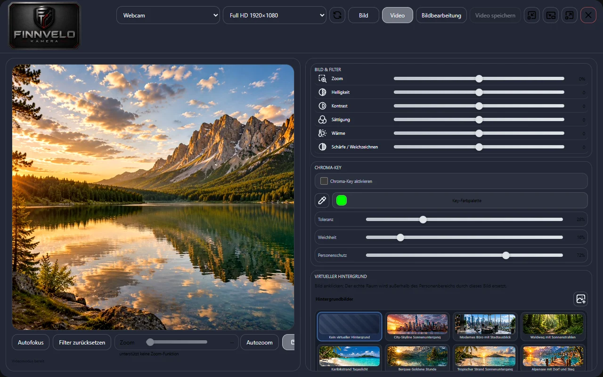
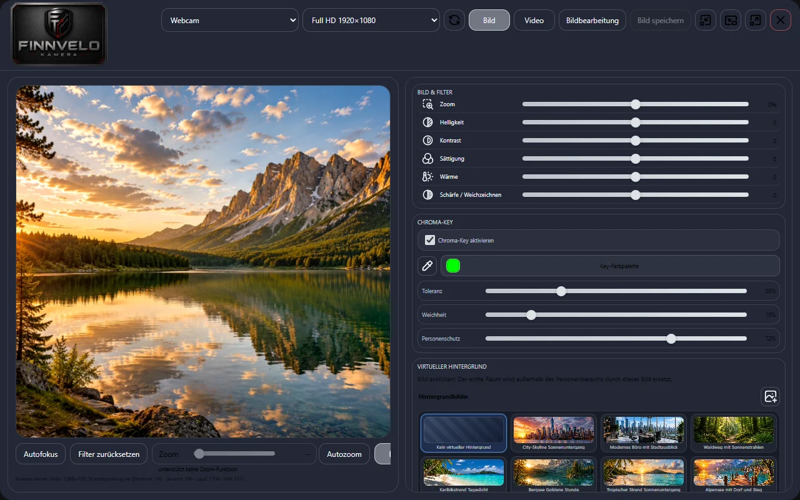
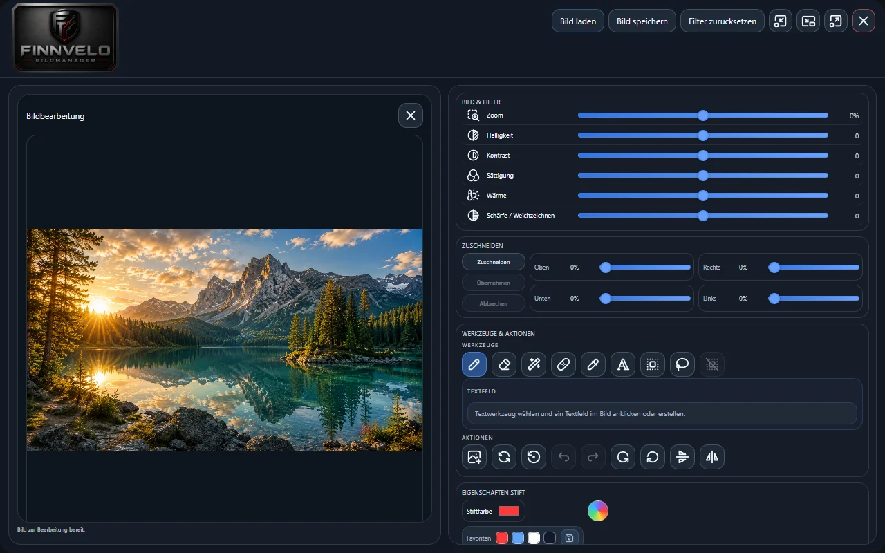
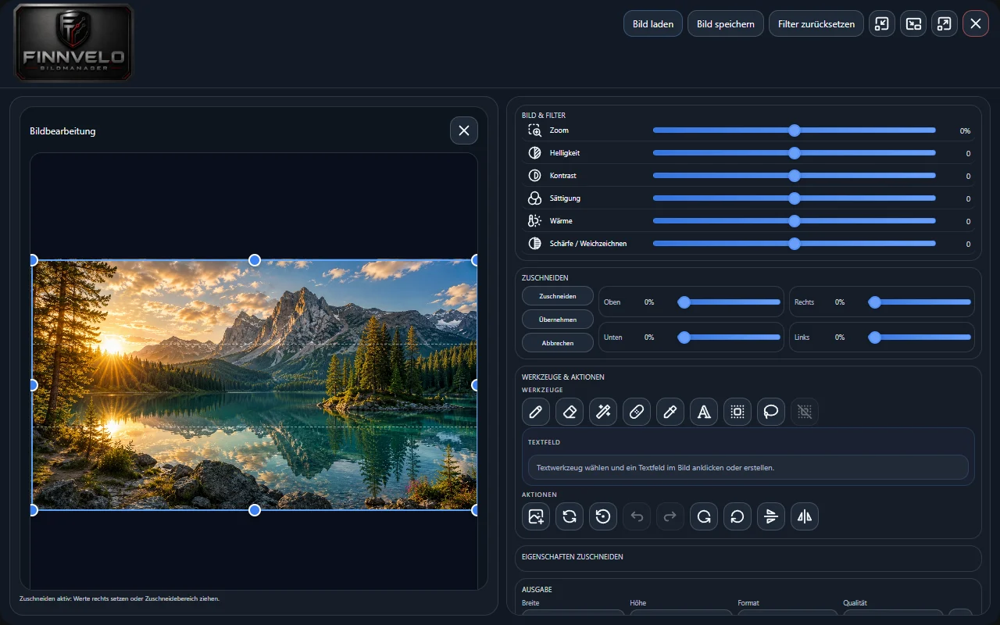

Kamera · Bildbearbeitung · Video
Finnvelo Medienstudio
In EntwicklungDas Finnvelo Medienstudio bündelt Kamera, Bildbearbeitung und Videoaufnahme in einem Windows-Programm. Es entsteht als eigenständiger Medienbereich der Finnvelo-Programme und wird schrittweise ausgebaut.
Beschreibung
Das Medienstudio verbindet drei Werkzeuge, die sonst in getrennten Programmen stecken: eine Kamera-Anwendung für Webcam und angeschlossene Kameras, einen Bildeditor für die Nachbearbeitung und einen Videobereich für Aufnahmen. Fotos aus der Kamera lassen sich mit einem Klick in die Bildbearbeitung übergeben.
Die Kamera bietet mehr als ein einfaches Vorschaubild: Kamera und Auflösung von HD bis UHD sind wählbar, Zoom und Bildausschnitt einstellbar, und Filter für Helligkeit, Kontrast, Sättigung, Wärme und Schärfe wirken direkt auf Vorschau und Aufnahme. Der echte Raum hinter dir lässt sich durch ein Bild ersetzen – über einen einstellbaren Personenbereich oder per Chroma-Key mit Greenscreen.
Das Programm befindet sich in der Entwicklung. Der Funktionsumfang wird schrittweise erweitert, als Nächstes vor allem bei Retusche, Text und Formen im Bildeditor.
Im Videomodus nimmst du auf und schneidest das Ergebnis gleich im Programm: Anfang und Ende festlegen, einen Text mit eigener Schrift und Größe einblenden und das Video speichern. Der Autofokus lässt sich vor der Aufnahme anfordern und ist während einer Aufnahme gesperrt, damit das Bild nicht pumpt.
Der Bildeditor bringt die üblichen Werkzeuge mit: Stift und Pipette, Radierer und magischen Radierer, einen Reparaturpinsel, Textfelder mit Schriftart, Farbe, Füllung und Rahmen, einen rechteckigen Wirkbereich und ein Lasso für Teilbereiche, dazu Zuschneiden an allen vier Seiten. Jeder Schritt lässt sich rückgängig machen und wiederholen. Gespeichert wird über den gewohnten Speichern-Dialog, ab Werk in deinen Ordner „Bilder“ bzw. „Videos“.
Kamera mit Feineinstellung
Kamera und Auflösung wählen – Auto, HD, Full HD, QHD, UHD oder das Maximum –, zoomen und den Bildausschnitt live festlegen.
Virtuelle Hintergründe
Den Raum durch mitgelieferte Motive oder eigene Bilder ersetzen – über einen einstellbaren Personenbereich oder per Greenscreen.
Autofokus
Fokus vor der Aufnahme anfordern; während einer Aufnahme bleibt er gesperrt, damit das Bild ruhig bleibt.
Bildeditor
Zuschneiden, Stift und Filter, Texte einfügen, Retusche- und Radierwerkzeuge sowie eine Farbauswahl mit Favoriten.
Schritte zurück
Jede Bearbeitung lässt sich rückgängig machen und wiederholen.
Fotos und Videos
Einzelbilder aufnehmen oder in den Videomodus wechseln – alles in einem Programm.
Live-Filter
Helligkeit, Kontrast, Sättigung, Wärme und Schärfe wirken sofort auf Vorschau und Aufnahme.
Chroma-Key
Key-Farbe per Palette oder Pipette, dazu Toleranz, Weichheit und Personenschutz.
Videoschnitt
Anfang und Ende kürzen, einen Text einblenden und das Video speichern.
Magischer Radierer
Macht zusammenhängende Flächen ähnlicher Farbe durchsichtig – mit einstellbarer Toleranz und Stärke.
Reparaturpinsel
Füllt kleine Störungen mit Farben aus der Umgebung – mit eigener Pinselgröße und Stärke.
Ohne Netz
Das Medienstudio arbeitet vollständig auf deinem Rechner und lädt nichts hoch.
Oberfläche
Die folgenden Ansichten zeigen Kamera und Bildeditor mit einem mitgelieferten Beispielbild statt einer echten Aufnahme. Ein Klick auf ein Bild öffnet es groß.
Kamera und Video


Bildbearbeitung


Einstellungen – das kannst du anpassen
Das Medienstudio stellst du direkt an den Werkzeugen ein, ein eigenes Einstellungsfenster braucht es nicht. Ein Überblick über die Regler und Optionen:
Kamera
- KameraWebcam oder angeschlossene Kamera auswählen.
- AuflösungAuto, HD 1280×720, Full HD 1920×1080, QHD 2560×1440, UHD 3840×2160 oder „Maximum versuchen“.
- Zoom und AutozoomBildausschnitt von Hand oder automatisch.
- AutofokusFokus anfordern, während der Aufnahme gesperrt.
Bild und Filter
- Zoom, Helligkeit, KontrastJeweils stufenlos per Regler.
- Sättigung und WärmeFarben kräftiger oder blasser, wärmer oder kühler.
- Schärfe / WeichzeichnenEin Regler für beides.
- Filter zurücksetzenAlles mit einem Klick auf null.
Chroma-Key und Hintergrund
- Chroma-KeyEin- und ausschalten, Key-Farbe aus der Palette oder per Pipette.
- Toleranz, Weichheit, PersonenschutzWie genau die Farbe getroffen wird, wie weich die Kanten werden und wie stark die Person geschützt bleibt.
- Virtueller HintergrundMotiv anklicken; Breite, Höhe und Position des Personenbereichs einstellen.
Video
- SchneidenStart und Ende in Prozent.
- Text einfügenSchrift, Größe und Text, ein- oder ausblendbar.
- ExportVideo speichern über den Speichern-Dialog.
Werkzeuge im Bildeditor
- StiftGröße und Deckkraft.
- Radierer und magischer RadiererGröße und Stärke, beim magischen Radierer zusätzlich die Toleranz.
- ReparaturpinselGröße und Stärke.
- AuswahlRechteck-Wirkbereich oder Lasso, Bereich aufheben, Ansicht zurücksetzen.
Text und Zuschneiden
- TextfeldSchriftart, Größe, Schrift- und Füllfarbe, Füllung, Rahmen, Deckkraft und Ausrichtung.
- FavoritenHäufig genutzte Farben für den schnellen Zugriff.
- ZuschneidenOben, rechts, unten und links in Prozent oder per Rahmen.
Besondere Vorteile
- Kamera, Bildbearbeitung und Videoschnitt in einem Programm
- Fotos aus der Kamera direkt in den Editor übergeben
- Virtueller Hintergrund auch ohne Greenscreen
- Auflösung bis UHD, Filter live auf Vorschau und Aufnahme
- Kein Konto, keine Anmeldung, kein Upload
- Rückgängig und Wiederholen für jeden Schritt
Zielgruppe
Für alle, die mit Webcam oder Kamera schnell ein gutes Bild machen und es ohne großes Bildbearbeitungsprogramm nachbearbeiten wollen.
- Wer für Videotelefonate, Bewerbungsfotos oder Profilbilder einen aufgeräumten Hintergrund braucht.
- Wer kurze Videos aufnehmen, kürzen und beschriften möchte.
- Wer Fotos zuschneiden, aufhellen oder mit Text versehen will, ohne ein Abo abzuschließen.
Daten und Datenschutz
Kamerabild, Fotos und Videos bleiben auf deinem Rechner. Das Medienstudio ruft keine Adressen im Internet auf und lädt nichts hoch. Gespeichert wird nur, was du selbst über den Speichern-Dialog ablegst.
Download (PC-Version)
Programm herunterladen
Das Medienstudio befindet sich in der Entwicklung. Sobald eine erste Testfassung für Windows veröffentlicht ist, steht sie hier zum Download bereit.
Zur Download-ÜbersichtHinweis
Windows meldet bei unbekannten Programmen einen Warnhinweis. Über „Weitere Informationen“ → „Trotzdem ausführen“ lässt sich der Start fortsetzen.